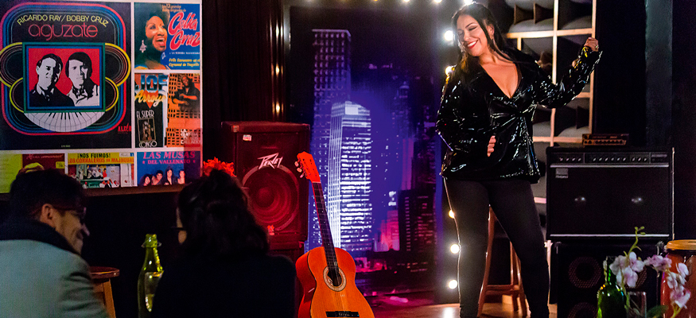

Cindy Velásquez
Por: Jerrika Lozano
La sonera de Colombia
 @cindycanta
@cindycanta Cindy Velásquez
Cindy Velásquez Cindy Velásquez
Cindy VelásquezEsta artista de la casa Mi Gente TV nos cuenta acerca de sus logros y experiencias en el pasado 2018, asegurando que fue un año lleno de crecimiento personal y profesional, logrando abrir puertas importantes para su carrera de la mano con nuestro canal. Nos acompañó en diferentes conciertos en varias ciudades del país, donde la respuesta del público fue todo un agrado para Cindy pues los asistentes disfrutaron de sus temas musicales.

Temas como –Estoy buscando– y –Atrévete– sonaron en cada una de sus presentaciones, dándola a conocer como artista del género tropical a nivel nacional; para este 2019 busca recoger todo lo sembrado y así iniciar temporada de conciertos para posicionarse aún más.
Por lo pronto, estará grabando el video oficial de su sencillo –Estoy buscando– para luego presentar sus dos nuevos temas, un bolero titulado –Si te vas– y –La sonera llegó– con el cual asegura “van a dar de que hablar”. Estos dos temas son de su autoría y al preguntarle ¿Cuál es su inspiración? Nos cuenta, “Es un momento que no tiene fecha, ni horario en el calendario. Son situaciones y cosas que veo, pero en general es lo que quiero transmitir a mi público, y así nacen mis canciones”.
Enfocada en seguir nutriendo su carrera musical Cindy espera que este año esté lleno de nuevos proyectos, estará cantando nuevamente en diferentes ciudades del país para que aquellos que se perdieron su show tengan la oportunidad de compartir con ella y disfrutar de sus grandes éxitos. Si no quieres perderte nada de esta artista no olvides seguirla en sus redes sociales.